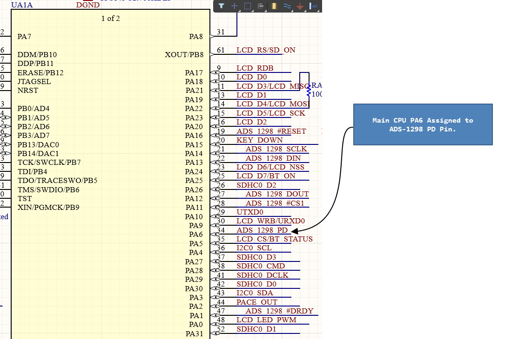

Holter Updates
This code updates is under testing on the Holter Device without Bluetooth Module. The code puts the ADS1298 into power down mode when the Holter is powered off.
This reduces the current consumption to about 6mA in power off mode.

Main CPU Pin Assignment to power down ADS-1298 ADC.

Apply the following code changes to the Holter Firmware.
File Location:
SupplyController.c
void enter_backup_mode(void) {
CLR_ADS1298_PWD;
delay_ms(100);
// 1. Enable Wakeup Input 12 (PB2)
// SUPC_WUIR_WKUPEN12_ENABLE: Enable wake up
// SUPC_WUIR_WKUPT12_LOW: Wake up on Low Level (can also be HIGH)
SUPC->SUPC_WUIR = SUPC_WUIR_WKUPEN12_ENABLE | SUPC_WUIR_WKUPT12_LOW;
// 2. Enter Backup Mode
// This turns off the main voltage regulator.
// The device will reset upon waking up!
pmc_enable_backupmode();
}
void ResetCpu(void) {
enter_backup_mode(); // Enter Backup Mode
rstc_enable_user_reset(RSTC);
rstc_start_software_reset(RSTC);
while (1) {
nop();
/* Wait indefinitely for a WDT reset */
}
}
A new function
void enter_backup_mode(void) has been added to the SupplyController.c file. The function puts the ADS1298 into power down mode by clearing the PWD pin.
Then it enables the Wakeup Input 12 (PB2) to wake up the CPU from backup mode.
Note that Wakeup Input 12 (PB2) is connected to the SW2 Button on the Holter Device.
Finally, it calls the
pmc_enable_backupmode() function to enter backup mode.